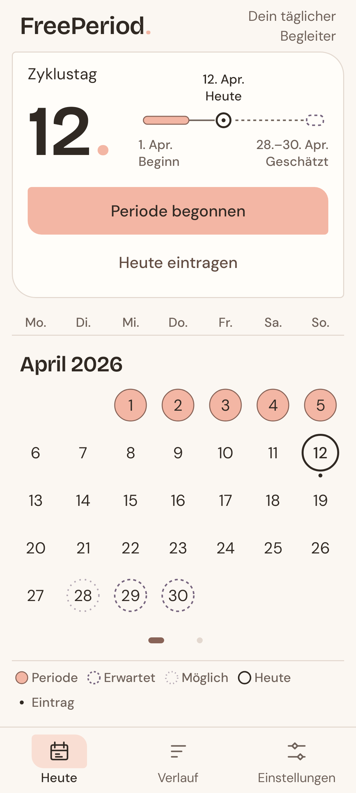
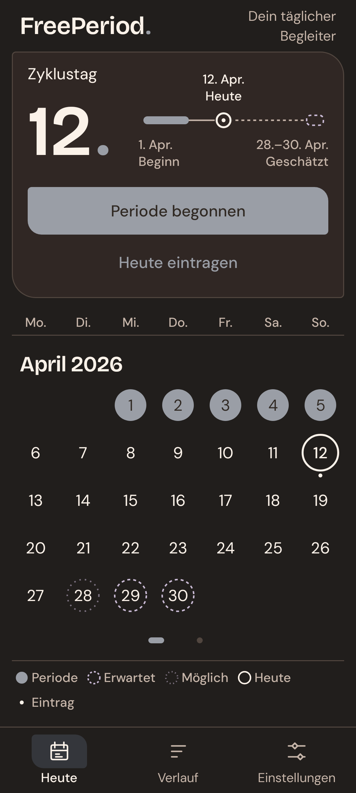
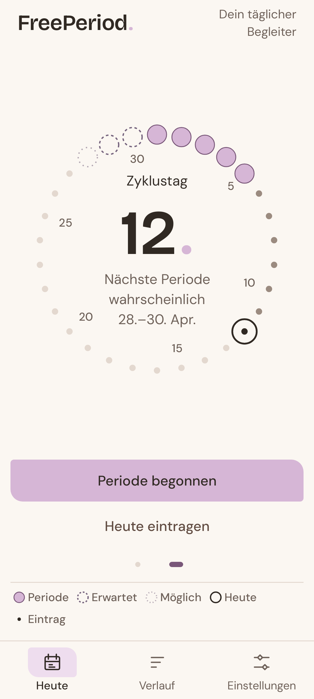
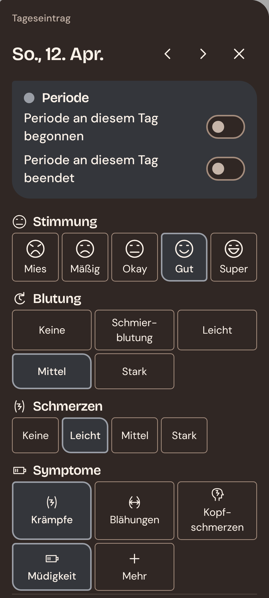
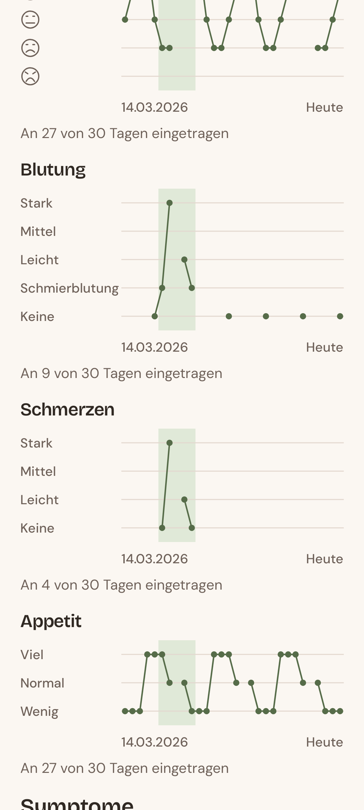
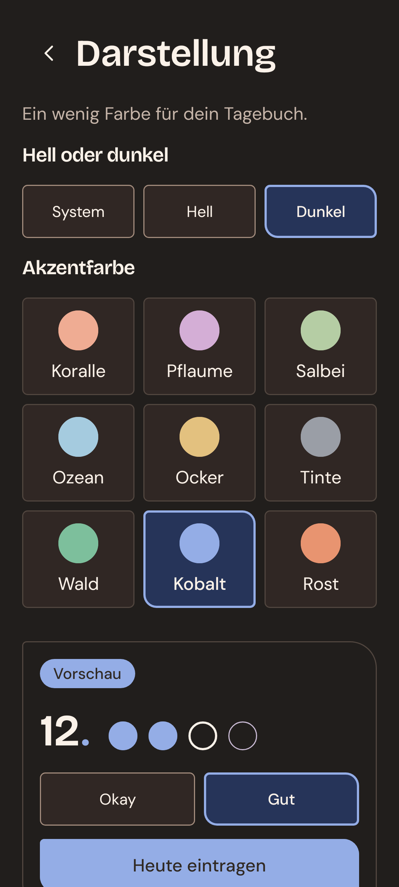
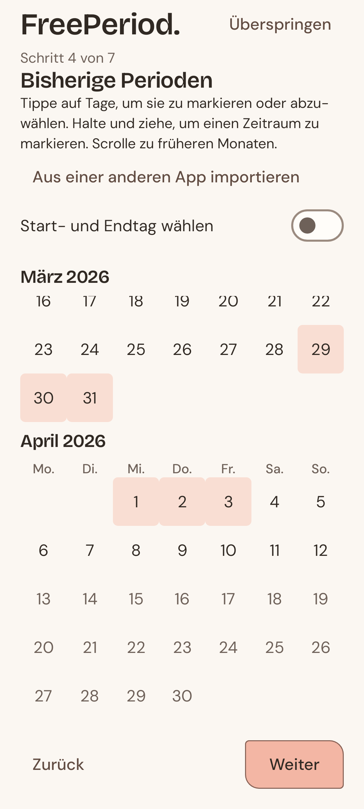

FreePeriod.
Hell oder dunkel.
Sanft oder kräftig.
Neun Farben und ein dunkler Modus. Ganz nach dir.


Hell · Koralle
Dunkel · Tinte
Neun Farben und ein dunkler Modus. Ganz nach dir.


Hell · Koralle
Dunkel · Tinte
Zwischen Kalender und Zykluskreis wischen.

Stimmung, Symptome und Notizen. So viel du willst.

Graphen und Verlauf, von Woche bis Jahr.

Farben, dunkler Modus und App-Sperre.

Vergangene Perioden eintragen oder überspringen.
